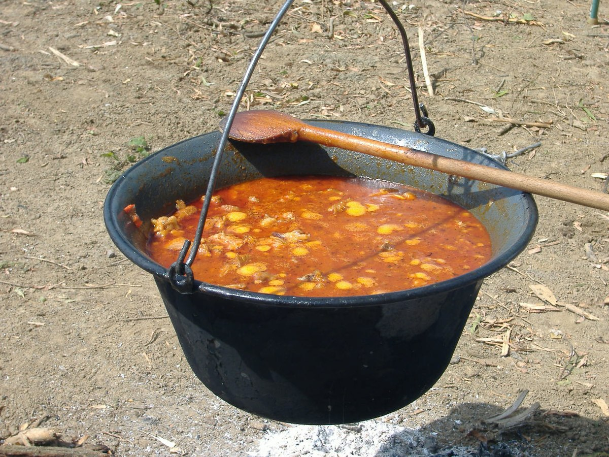

Goulash

Description
Goulash is a hearty dish of stewed beef and tomatoes that was first developed as a Hungarian dish.
Ingridients
- 2 medium onions
- 2 teaspoons butter or lard (preferred)
- 1 teaspoon caraway seeds
- 2 tablespoons paprika
- ¼ cup flour
- 1 ½ pound stewing beef trimmed and cut into 1" cubes
- 2 cups beef broth or water
- 1 cup diced tomatoes canned
- 1 teaspoon salt
- ¼ teaspoon pepper
Steps
- In a large pot, melt butter and add onion. Cook till translucent. Stir in caraway seeds and paprika and mix well.
- In a bowl, dredge the stew beef with flour. Add beef to the onion mixture and cook for about 2-3 minutes.
- Slowly add about ¼ cup of the beef broth to lift the brown bits off the bottom of the pan. Then add remaining broth, diced tomatoes (potatoes and carrots if using), salt and pepper.
- Stir and bring to a boil, cover, then reduce to a simmer for about 1 ½ -2 hours or until tender.